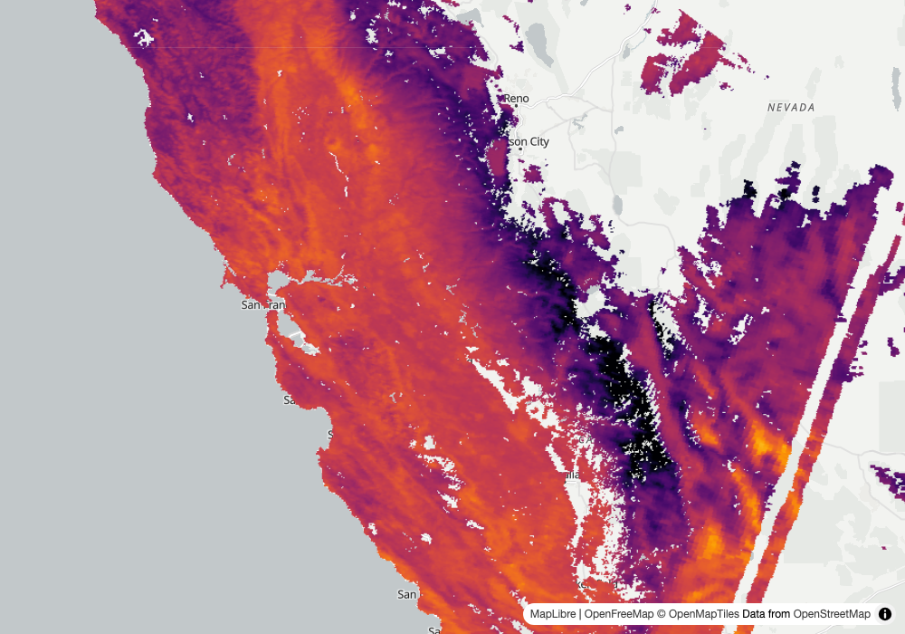
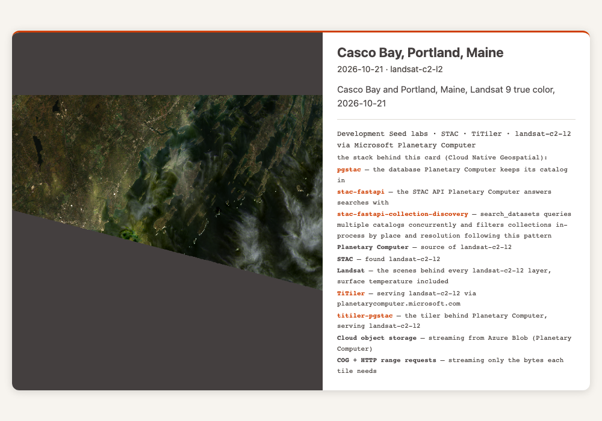
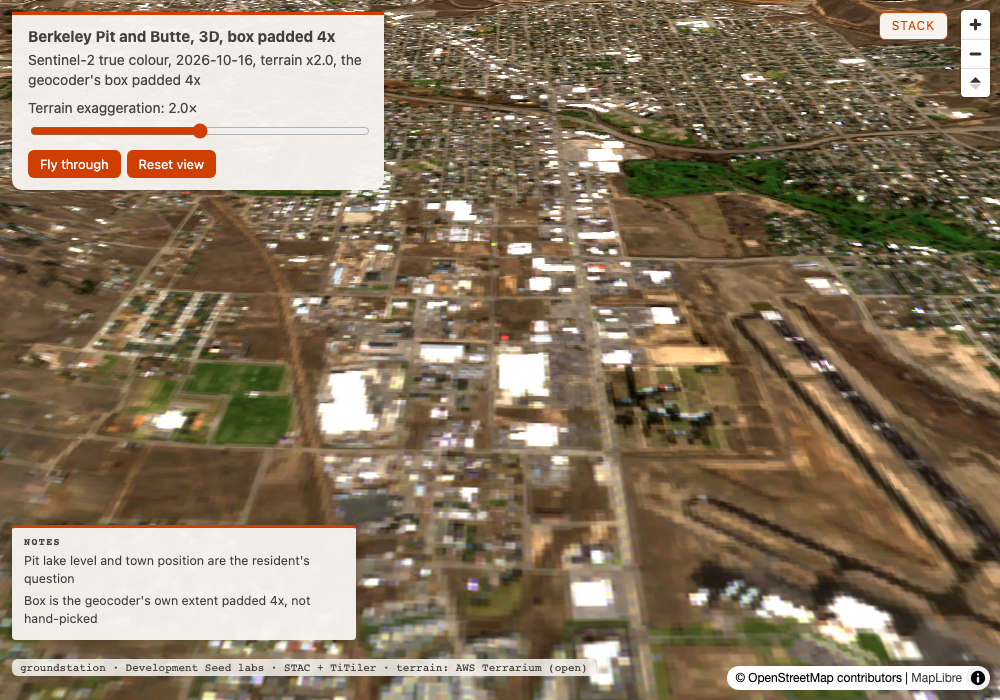
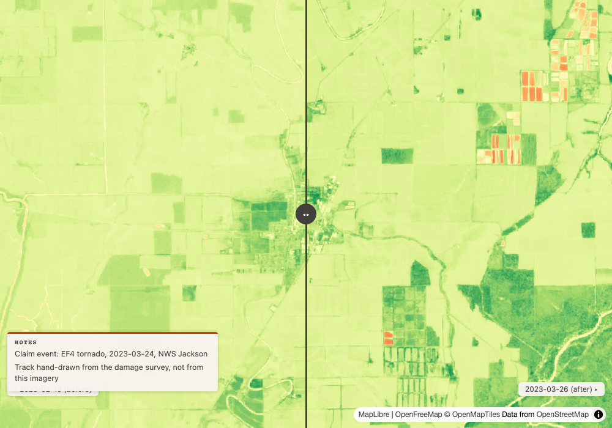
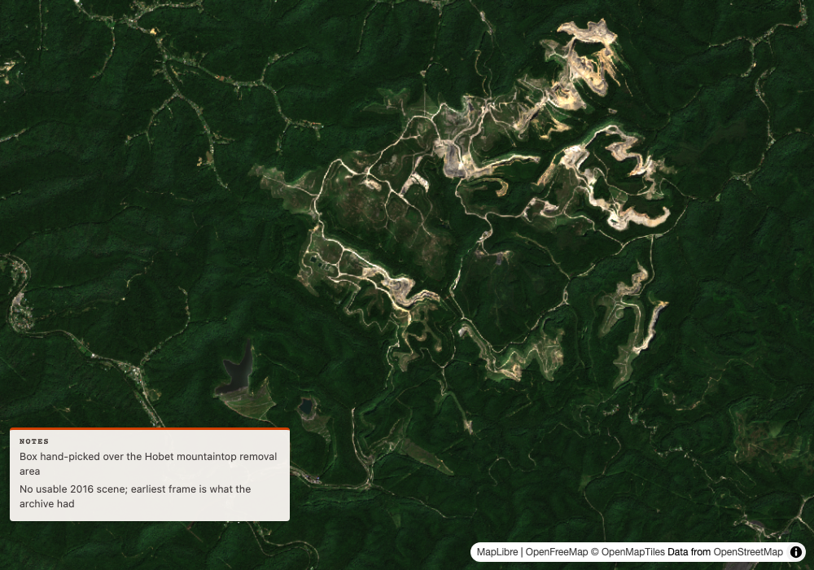
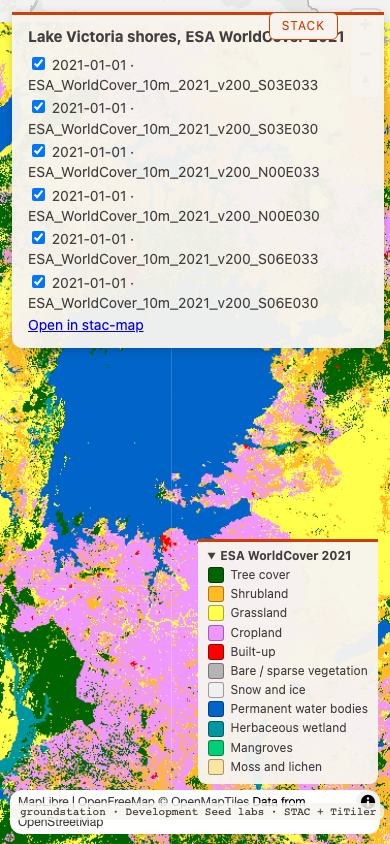

Round 1: coverage by the footprint
1
find lst data
public health researcher
Input
What datasets do you have for land surface temperature over California's Central Valley, and can you show one?
Our read
Search now recommends the 2 tiles that actually cover the Valley, h08v05 and h08v04 from 2026-10-24, which together cover 99.9% of the box. The empty h07v05 tile reads covers_aoi_pct 0.1 by coverage_basis footprint, where field test 14 had it at 92.6. The recommendation carries scene_ids for both tiles and the map was drawn from them as one coverage set. Caveats: the recommended h08v05 scene is 28% cloud, and the best single scene covers 92.0%, so the second tile adds only a northern strip; I did not fetch tile bytes this round, so that the map is not empty rests on the screenshot. The map is not clean: there are white no-data patches inside the Valley and a diagonal white stripe at the east edge, and the stretch I first copied from field test 14's tile_url_template call (14500 to 16000; field test 14 drew no map) drew nearly all the land black in late October, so I re-rendered with 13500 to 15500 and show that one.
map: Central Valley land surface temperature, MODIS 2026-10-24 ↗show the data
search_imagery("planetary-computer", ["modis-11A1-061"], bbox=[-122.4, 35.0, -118.6, 40.4], datetime_range="2026-10-20T00:00:00Z/2026-10-26T23:59:59Z", limit=10)
count: 10
recommended: {"id": "MOD11A1.A2026297.h08v05.061.2026298094323", "scene_ids": ["MOD11A1.A2026297.h08v05.061.2026298094323", "MOD11A1.A2026297.h08v04.061.2026298094315"], "covers_aoi_pct": 99.9, "cloud_cover": 28, "reason": "no single scene covers this area; these 2 from 2026-10-24 together cover 99.9% of it (full_coverage_set). The best single scene covers 92.0%"}
MOD11A1.A2026297.h08v05.061.2026298094323 2026-10-24 cloud 28 covers_aoi_pct 92.0 coverage_basis footprint
MOD11A1.A2026297.h08v04.061.2026298094315 2026-10-24 cloud 1 covers_aoi_pct 7.8 coverage_basis footprint
MOD11A1.A2026297.h07v05.061.2026298094307 2026-10-24 cloud 0 covers_aoi_pct 0.1 coverage_basis footprint
MOD11A1.A2026296.h08v05.061.2026297104257 2026-10-23 cloud 34 covers_aoi_pct 92.0 coverage_basis footprint
MOD11A1.A2026296.h08v04.061.2026297104225 2026-10-23 cloud 6 covers_aoi_pct 7.8 coverage_basis footprint
MOD11A1.A2026296.h07v05.061.2026297104028 2026-10-23 cloud 0 covers_aoi_pct 0.1 coverage_basis footprint [first 6 of 10 rows]
full_coverage_set: date 2026-10-24, union_covers_aoi_pct 99.9, items ["MOD11A1.A2026297.h08v05.061.2026298094323", "MOD11A1.A2026297.h08v04.061.2026298094315"]
render_map("Central Valley land surface temperature, MODIS 2026-10-24 (recommended set)", bbox=[-122.4, 35.0, -118.6, 40.4], [coverage_set layer from full_coverage_set, assets ["LST_Day_1km"], rescale "13500,15500", colormap_name "inferno"], out_path="docs/img/ft15-lst-valley.html")
map_path: docs/img/ft15-lst-valley.html
layers: ["LST day · MOD11A1.A2026297.h08v05.061.2026298094323", "LST day · MOD11A1.A2026297.h08v04.061.2026298094315"]
state.coverage_pct: 99.9
[a first render_map with rescale "14500,16000", the stretch field test 14 used in tile_url_template, drew nearly all the land black; the call above is the re-render this card links]
Learning → Fixed. Field test 14 said: "the recommended item is still the empty tile" and "covers_aoi_pct is still computed from the item's envelope box ... both read 92.6". Now h07v05 reads 0.1 with
coverage_basis: footprint, h08v05 reads 92.0, h08v04 reads 7.8, and recommended is h08v05 plus h08v04 at 99.9 with both ids in scene_ids, the same pair full_coverage_set lists. Not as clean as the stop note: the figure for h08v05 moved from 92.6 to 92.0 because it is now measured against the footprint polygon, and the recommended scene still carries 28% cloud (the other tile is at 1%). The colour stretch is mine and was wrong the first time: field test 14's 14500 to 16000 drew the land black, so the map uses 13500 to 15500. What I did not do: fetch a z7 tile from either item as field test 14 did, so "not empty" is read off the map still and not off an HTTP 200.covers_aoi_pct by footprint (stop 17) · coverage_basis · recommended scene_ids · full_coverage_set into render_map · MODIS LST
2
which portland
harbor pilot
Input
Show me the harbor approaches at Portland from the latest Landsat pass.
Our read
The Casco Bay card now says how much of itself is empty: 31.6% uncovered, on the south side, printed as black no-data. I counted the pixels in the embedded PNG and 33.7% are near-black (all channels below 12), 33.4% exactly zero, so the grid figure and the pixel figure differ by about 2 points. The black wedge itself is still there: the open water seaward of the islands, the part a pilot would want, is cut off along a slanted edge, and no same-day sibling can fill it on Planetary Computer. I used the same scene as field test 14 (2026-10-21, 2.63% cloud) so the numbers compare; the search also returned a scene from the same day that covers 100.0% of the box at 23% cloud, which I did not render. A 30 m satellite picture, not for navigation.
postcard: Casco Bay, Landsat 9, 2026-10-21 ↗show the data
[geocoding of Portland not re-run here; the Casco Bay box from the earlier card is used directly: casco = [-70.40, 43.55, -69.90, 43.85]]
search_imagery("planetary-computer", ["landsat-c2-l2"], bbox=casco, datetime_range="2026-10-01T00:00:00Z/2026-10-26T23:59:59Z", limit=10)
LC09_L2SP_012030_20261021_02_T1 2026-10-21 cloud 23.01 covers_aoi_pct 100.0 footprint
LC09_L2SP_012029_20261021_02_T1 2026-10-21 cloud 2.63 covers_aoi_pct 66.6 footprint
LC09_L2SP_011030_20261014_02_T1 2026-10-14 cloud 53.29 covers_aoi_pct 87.0 footprint [other rows omitted]
render_postcard("planetary-computer", "landsat-c2-l2", "LC09_L2SP_012029_20261021_02_T1", "Casco Bay, Portland, Maine", "2026-10-21", assets=["red","green","blue"], rescale="7000,16000", bbox=casco, caption="Casco Bay and Portland, Maine, Landsat 9 true color, 2026-10-21", out_path="docs/img/ft15-place-casco.html")
{"path": "docs/img/ft15-place-casco.html", "coverage_pct": 68.4, "uncovered_pct": 31.6, "uncovered_side": "south", "coverage_note": "the scene footprint leaves 32% of the card uncovered, mostly south, printed as black no-data; no same-day sibling fills it: mosaic cards need direct COG access, which planetary-computer does not offer"}
pixel check, PIL on the embedded PNG (1 image, 1024 x 768, 1024138 bytes):
pixels with all channels < 12: 0.3372 of the image
pixels exactly (0,0,0): 0.3340
uncovered_pct from the result: 31.6
Learning → Fixed. Field test 14 said "neither the result nor the card text warns of it" and put the wedge at "about 45 percent" by eye. Now the result carries
coverage_pct 68.4, uncovered_pct 31.6, uncovered_side south and a coverage_note that names the refused fill. Two stumbles stay. The pixels say 33.7%, not 45, so the by-eye figure was too high; both numbers are reported as measured and I do not reconcile them further. And the warning lives only in the tool result: a search of the card HTML for uncovered, no-data and no data finds 0 matches, so someone who opens the card without the chat sees black and no words. The wedge is not filled, and for a Planetary Computer user it cannot be.coverage_pct · uncovered_pct · uncovered_side · coverage_note (stop 17) · pixel check against the grid · fill refusal on Planetary Computer
Round 2: the geocoder's one scoring pass
3
superfund pit 3d
Superfund community liaison, Butte
Input
Give me a 3D view of the Berkeley Pit so residents can see how the pit lake sits relative to town.
Our read
The geocoder now hands back the pit's own box, 0.0245 by 0.0127 degrees (about 1.9 by 1.4 km), and a 3D view over exactly that box draws a blank map. It loads with no error and the Notes box prints both notes, but the map is white at zoom 14.5, pitch 60, even though the tiles answer 200 under curl. The linked 3D view is not the geocoder's own box: it is that box padded 4x about its centre (docs/img/ft15-mine-berkeley3d-wide.html), while the tight-box view stays at docs/img/ft15-mine-berkeley3d.html, unlinked and with no still. The padded view is Sentinel-2 true colour from 2026-10-16 (0.09% cloud) over terrain at 2x, with Butte's streets in view, and the same 2 notes (2 matches each in the page, the second reworded to say the box is padded). The tight view frames the pit and not the town, so the resident's question about town needs the wider frame. The view does not show the pit lake's level or water quality, and the pit lake itself is not picked out in the screenshot.
3D map: Berkeley Pit and Butte, the geocoder's box padded 4x, with notes ↗show the data
geocode("Berkeley Pit, Butte, Montana")
source: nominatim name: Berkeley Pit, Butte, Silver Bow County, Montana, United States
lat: 46.0171513 lon: -112.511732
bbox: [-112.5235427, 46.0107713, -112.4990514, 46.0234592]
candidates:
{"name": "Berkeley Pit, Butte, Silver Bow County, Montana, United States", "bbox": [-112.5235427, 46.0107713, -112.4990514, 46.0234592], "source": "nominatim", "where": "Berkeley Pit, Montana, United States", "kind": "water", "extent": [0.0245, 0.0127], "importance": 0.353, "score": 0.466}
[top-level bbox is 0.0245 by 0.0127 degrees, the candidate's own extent]
search_imagery("earth-search", ["sentinel-2-l2a"], bbox=, datetime_range="2026-10-01T00:00:00Z/2026-10-26T23:59:59Z", max_cloud_cover=10, limit=8)
recommended: S2C_12TUS_20261021_0_L2A cloud 4.704387 covers_aoi_pct 100.0
S2A_12TUR_20261016_0_L2A 2026-10-16 cloud 0.087828 covers_aoi_pct 100.0 footprint [picked: clearest at 100%; other rows omitted]
render_map_3d("Berkeley Pit and Butte, 3D", bbox=, layer=, exaggeration=2.0, subtitle="Sentinel-2 true colour, 2026-10-16, terrain x2.0, the geocoder's own box", stack_facts={"geocoded": "nominatim", "scene": "S2A_12TUR_20261016_0_L2A", "cloud cover %": "0.09"}, notes=["Pit lake level and town position are the resident's question", "Box is the geocoder's own extent, not hand-picked"])
path: docs/img/ft15-mine-berkeley3d.html
state.coverage_pct: 100.0
notes: ["Pit lake level and town position are the resident's question", "Box is the geocoder's own extent, not hand-picked"]
stack_facts_ignored: ["scene", "cloud cover %"]
note: stack_facts takes provenance flags only (geocoded, events, weather, passes, terrain, snapshot); put free text in notes
grep -c of the HTML, per note string (apostrophe as '):
"Pit lake level and town position are the resident's question": 2
"Box is the geocoder's own extent, not hand-picked": 2
opened in headless Chromium 1000 x 700, 15 s: map loaded True, areTilesLoaded True, zoom 14.54, pitch 60; the canvas is blank white, only the panels and the Notes box draw. Terrarium and Sentinel tiles fetched with curl at the same place: HTTP 200 (74184 bytes for the Sentinel-2 tile at z14 x3071 y5827).
second render, the geocoder's box padded 4x about its centre: [-112.5603, 45.9917, -112.4623, 46.0425]
render_map_3d("Berkeley Pit and Butte, 3D, box padded 4x", bbox=, layer=, exaggeration=2.0, subtitle="Sentinel-2 true colour, 2026-10-16, terrain x2.0, the geocoder's box padded 4x", stack_facts={"geocoded": "nominatim"}, notes=["Pit lake level and town position are the resident's question", "Box is the geocoder's own extent padded 4x, not hand-picked"])
path: docs/img/ft15-mine-berkeley3d-wide.html state.coverage_pct: 100.0
grep -c per note string: 2 and 2
opened: map loaded True, zoom 12.54, pitch 60; Butte draws, in true colour over terrain
Learning → Fixed. Field test 14 said both queries "still return the 0.3 degree top-level box [-112.661732, 45.8671513, -112.36173199999999, 46.1671513] with the tight 0.024 by 0.013 degree box only on the single candidate". Now the top-level bbox is [-112.5235427, 46.0107713, -112.4990514, 46.0234592], the candidate's own box, and the candidate carries kind (water), extent, importance (0.353), source and score (0.466). It is also the first live proof of
render_map_3d notes: both strings are in the HTML, 2 matches each. Stumbles, in order of weight: the tight box gives a blank map in my headless Chromium, which I did not diagnose (I tried no real browser and no other zoom); the tight box is a poor frame for a question about town in any case; and the stack_facts keys I passed the way field test 14 did (the scene id and cloud cover) now come back in stack_facts_ignored with a one-line note, which is stop 19 working, but those facts no longer reach the Stack panel at all. One candidate again, so there was no lake-versus-water contest to show.geocode single scoring pass: kind · extent · importance · source · score (stop 18) · tight top-level bbox · render_map_3d notes (stop 19) · stack_facts_ignored · blank 3D at a tight box
4
Portland refusal
harbor pilot
Input
Show me the harbor approaches at Portland from the latest Landsat pass.
Our read
A bare "Portland" is refused with the state and country named for every candidate: Oregon (an urban centre and a locality), Maine, and Guadeloupe, France. The harbor pilot gets "Pass a fuller name or a bbox" and can answer in one word: Maine. Oddities that remain: the Guadeloupe candidate is named "Le Moule (GP, locality)", not Portland, so a pilot sees a place with no Portland in its name offered as a match; the geocode_note still gives coordinates, not states ("at 45.5N 122.7W", "at 43.6N 70.2W"); and the best score is 0.099 against 0.085 and 0.084 for the next two, so the note's words "match ... equally well" and "(best score)" sit side by side.show the data
geocode("Portland")
source: gazet name: Portland (United States, urban_centre)
lat: 45.538030689845755 lon: -122.68500967242345
bbox: [-123.00962869473211, 45.357650354951424, -122.36039065011478, 45.71841102474009]
ambiguous: true
candidates:
{"name": "Portland (United States, urban_centre)", "bbox": [-123.00962869473211, 45.357650354951424, -122.36039065011478, 45.71841102474009], "source": "gazet", "where": "Oregon, United States", "kind": "urban_centre", "extent": [0.6492, 0.3608], "importance": null, "score": 0.099}
{"name": "Portland (US, locality)", "bbox": [-122.83676147460938, 45.43252944946289, -122.4720230102539, 45.65288162231445], "source": "gazet", "where": "Oregon, United States", "kind": "locality", "extent": [0.3647, 0.2204], "importance": null, "score": 0.085}
{"name": "Portland (US, locality)", "bbox": [-70.34740447998047, 43.54434585571289, -69.97584533691406, 43.72770309448242], "source": "gazet", "where": "Maine, United States", "kind": "locality", "extent": [0.3716, 0.1834], "importance": null, "score": 0.084}
{"name": "Le Moule (GP, locality)", "bbox": [-61.44199752807617, 16.277435302734375, -61.27794647216797, 16.3931884765625], "source": "gazet", "where": "Guadeloupe, France", "kind": "locality", "extent": [0.1641, 0.1158], "importance": null, "score": 0.071}
geocode_note: 4 places match 'Portland' equally well; using Portland (United States, urban_centre) at 45.5N 122.7W (best score), not Portland (US, locality) at 45.5N 122.7W, Portland (US, locality) at 43.6N 70.2W, Le Moule (GP, locality) at 16.3N 61.4W. Pass the fuller name if another was meant. ambiguous: pass the fuller name or a bbox
search_imagery("planetary-computer", ["landsat-c2-l2"], place="Portland", datetime_range="2026-10-01T00:00:00Z/2026-10-26T23:59:59Z", limit=3)
error: 'Portland' matches more than one place: urban_centre (Oregon, United States) or locality (Oregon, United States) or locality (Maine, United States) or locality (Guadeloupe, France)? Pass a fuller name or a bbox
[candidates and geocode_note repeated from the geocode call, omitted]
Learning → Fixed. Field test 14 said: "the ambiguity refusal lists four candidates by kind and coordinates with no state named" and "the note counts 5 matches and lists 4". Now each Gazet candidate's
where reads "Oregon, United States", "Maine, United States" or "Guadeloupe, France", the refusal text from search_imagery names them in the question itself, and the note counts 4 and lists 4. The stop note says the state comes from one reverse lookup; I saw its result, not the lookup. Still open: the geocode_note wording and the unexplained Le Moule row, both in the answer.refusal names state and country for Gazet rows (stop 18) · candidate where · scores · search_imagery place refusal
5
powell bathtub ring
river journalist
Input
Lake Powell: show me the low point of 2022 against this year, side by side, and tell me how much more water surface there is now.
Our read
"Lake Powell" and "Lake Powell, Utah" both give the reservoir's own box, about 1.19 by 0.98 degrees (Gazet) and 1.28 by 1.07 degrees (Nominatim), and that is on purpose. The reservoir is that big. A reader who wants the marina end cannot get a tight box by name: "Wahweap Bay, Utah" resolves to a bay whose own box is 0.0001 degrees, so the top-level box is the 0.3 degree point-rule square around it (about 33 km), and "Wahweap, Utah" is ambiguous with the creek first at 0.342 and the bay second at 0.207. I did not run the 2022-versus-now imagery or the water-surface comparison; only the geocoding was under test.show the data
geocode("Lake Powell")
source: gazet name: Powell (reservoir)
lat: 37.42277244238477 lon: -110.95922907183393
bbox: [-111.55546361133912, 36.932214624519844, -110.36299453232873, 37.913330260249694]
candidates:
{"name": "Powell (reservoir)", "bbox": [-111.55546361133912, 36.932214624519844, -110.36299453232873, 37.913330260249694], "source": "gazet", "where": "at 37.4N 111.0W", "kind": "reservoir", "extent": [1.1925, 0.9811], "importance": null, "score": 0.422}
{"name": "Lake Powell (AU, locality)", "bbox": [142.8666229248047, -34.7808723449707, 143.0175323486328, -34.647972106933594], "source": "gazet", "where": "AU, at 34.7S 142.9E", "kind": "locality", "extent": [0.1509, 0.1329], "importance": null, "score": 0.069}
geocode_note: 2 places match 'Lake Powell' equally well; using Powell (reservoir) at 37.4N 111.0W (best score), not Lake Powell (AU, locality) at 34.7S 142.9E. Pass the fuller name if another was meant
[top-level bbox 1.1925 by 0.9811 degrees]
geocode("Lake Powell, Utah")
source: nominatim name: Lake Powell, San Juan County, Utah, United States
lat: 37.3768572 lon: -110.726121
bbox: [-111.5674771, 36.8444117, -110.2867168, 37.9093781]
candidates:
{"name": "Lake Powell, San Juan County, Utah, United States", "bbox": [-111.5674771, 36.8444117, -110.2867168, 37.9093781], "source": "nominatim", "where": "Lake Powell, Utah, United States", "kind": "reservoir", "extent": [1.2808, 1.065], "importance": 0.435, "score": 0.859}
[top-level bbox 1.2808 by 1.065 degrees]
geocode("Wahweap Bay, Utah")
source: nominatim name: Wahweap Bay, Kane County, Utah, United States
lat: 37.0127651 lon: -111.4901602
bbox: [-111.64016020000001, 36.862765100000004, -111.3401602, 37.1627651]
candidates:
{"name": "Wahweap Bay, Kane County, Utah, United States", "bbox": [-111.4902102, 37.0127151, -111.4901102, 37.0128151], "source": "nominatim", "where": "Wahweap Bay, Utah, United States", "kind": "bay", "extent": [0.0001, 0.0001], "importance": 0.107, "score": 0.407}
bbox_note: geocoder returned a point, not an extent — widened to a 0.3 deg box around it. Pass your own bbox if the subject is bigger
[top-level bbox is the 0.3 degree square; the candidate's own box is 0.0001 degrees]
geocode("Wahweap, Utah")
source: nominatim name: Wahweap Creek, Kane County, Utah, United States
lat: 37.2896038 lon: -111.7696495
bbox: [-111.8191963, 37.035687, -111.5583944, 37.5906179]
ambiguous: true
candidates:
{"name": "Wahweap Creek, Kane County, Utah, United States", "bbox": [-111.8191963, 37.035687, -111.5583944, 37.5906179], "source": "nominatim", "where": "Wahweap Creek, Utah, United States", "kind": "river", "extent": [0.2608, 0.5549], "importance": 0.147, "score": 0.342}
{"name": "Wahweap Bay, Kane County, Utah, United States", "bbox": [-111.4902102, 37.0127151, -111.4901102, 37.0128151], "source": "nominatim", "where": "Wahweap Bay, Utah, United States", "kind": "bay", "extent": [0.0001, 0.0001], "importance": 0.107, "score": 0.207}
{"name": "Wahweap Wilderness Study Area, Kane County, Utah, United States", "bbox": [-111.9083869, 37.1129287, -111.5213283, 37.4543755], "source": "nominatim", "where": "Wahweap Wilderness Study Area, Utah, United States", "kind": "nature_reserve", "extent": [0.3871, 0.3414], "importance": 0.08, "score": 0.173}
{"name": "Wahweap Creek Road, Kane County, Utah, United States", "bbox": [-111.8096791, 37.1778909, -111.7125177, 37.3880289], "source": "nominatim", "where": "Wahweap Creek Road, Utah, United States", "kind": "track", "extent": [0.0972, 0.2101], "importance": 0.053, "score": 0.122}
geocode_note: matched 'Wahweap, Utah'; other places share it: Wahweap Bay, Utah, United States / Wahweap Wilderness Study Area, Utah, United States / Wahweap Creek Road, Utah, United States. Pass a state or country if another was meant. ambiguous: pass the fuller name or a bbox
Learning → Partly. Field test 14 said: "Lake Powell, Utah is unchanged: same Nominatim reservoir and a box about 1.3 by 1.1 degrees, still too big for a Wahweap-sized ask" and "candidates carry no importance, so I cannot say what margin was involved". Now every candidate carries a score: the Gazet reservoir is 0.422 against 0.069 for the Australian locality, Nominatim's reservoir is 0.859, and the note names the winner as "(best score)". So the margin is visible. The Gazet rows still give
where as coordinates ("at 37.4N 111.0W"), not a state: the reverse lookup runs only when a call is ambiguous, and this one is not. The box stumble stands, by design: the extent term rewards size only by a log, nothing narrows a reservoir to a bay, and a bay Nominatim returns as a point is widened to 0.3 degrees. New wrinkle: the note for "Lake Powell" says the 2 places match "equally well" while the scores are 0.422 and 0.069. Not re-run: the NDWI water-share step.scores on every candidate (stop 18) · reservoir box 1.28 by 1.07 degrees kept on purpose · point rule pads only boxes under 0.001 degrees · Wahweap by name
6
lava
rancher
Input
Any new lava flows near Kilauea this month?
Our read
"Kilauea, Hawaii" now answers with the volcano instead of refusing, and the answer does not tell you whether there are new lava flows. The volcano scores 0.577 against 0.378 for the village on Kauaʻi, the volcano's tiny box is widened to a 0.3 degree square, and compare_dates over it gives SWIR index -0.3046 on 2026-09-28 to -0.2689 on 2026-10-18, a delta of +0.0357, with the warning that the after scene is 36% cloud. It is a mean over the whole box, not a lava map. What did not reproduce is the refusal the stop note described: there is no ambiguous key, and the note says only that "other places share it: Kilauea, Hawaii, United States", with no county and no kind for the village.show the data
geocode("Kilauea, Hawaii")
source: nominatim name: Kīlauea, Hawaiʻi County, Hawaii, 96718, United States
lat: 19.4138647 lon: -155.275811
bbox: [-155.425811, 19.263864700000003, -155.125811, 19.5638647]
candidates:
{"name": "Kīlauea, Hawaiʻi County, Hawaii, 96718, United States", "bbox": [-155.275861, 19.4138147, -155.275761, 19.4139147], "source": "nominatim", "where": "Kīlauea, Hawaii, United States", "kind": "volcano", "extent": [0.0001, 0.0001], "importance": 0.477, "score": 0.577}
{"name": "Kilauea, Kauaʻi County, Hawaii, 96754, United States", "bbox": [-159.422598, 22.1961855, -159.392682, 22.22117], "source": "nominatim", "where": "Kilauea, Hawaii, United States", "kind": "village", "extent": [0.0299, 0.025], "importance": 0.35, "score": 0.378}
bbox_note: geocoder returned a point, not an extent — widened to a 0.3 deg box around it. Pass your own bbox if the subject is bigger
geocode_note: matched 'Kilauea, Hawaii'; other places share it: Kilauea, Hawaii, United States. Pass a state or country if another was meant
geocode("Kilauea volcano, Hawaii")
source: nominatim name: Kīlauea, Hawaiʻi County, Hawaii, 96718, United States
lat: 19.4138647 lon: -155.275811
bbox: [-155.425811, 19.263864700000003, -155.125811, 19.5638647]
candidates:
{"name": "Kīlauea, Hawaiʻi County, Hawaii, 96718, United States", "bbox": [-155.275861, 19.4138147, -155.275761, 19.4139147], "source": "nominatim", "where": "Kīlauea, Hawaii, United States", "kind": "volcano", "extent": [0.0001, 0.0001], "importance": 0.477, "score": 0.777}
bbox_note: geocoder returned a point, not an extent — widened to a 0.3 deg box around it. Pass your own bbox if the subject is bigger
compare_dates(place="Kilauea, Hawaii", window_before="2026-09-01T00:00:00Z/2026-09-30T23:59:59Z", window_after="2026-10-01T00:00:00Z/2026-10-25T23:59:59Z", expression="(swir22-nir)/(swir22+nir)", max_cloud_cover=40)
tile: 4QHG
after: S2B_4QHG_20261018_0_L2A 2026-10-18 cloud 35.941234 mean -0.2689 runner_up S2C_4QHG_20261003_0_L2A (cloud 36.102527)
before: S2B_4QHG_20260928_0_L2A 2026-09-28 cloud 6.979185 mean -0.3046 runner_up S2B_5QKB_20260928_0_L2A (cloud 9.331487)
delta: 0.0357 clipped_to: [-155.425811, 19.263864700000003, -155.125811, 19.5638647]
caveat: ["cloud may be driving this delta (after scene 36%, threshold 20%). Cloud pushes a normalized index toward zero."]
Learning → Fixed. Field test 12 said: "the volcano was candidate 2, but as a box 0.0001 degrees wide" and the call was refused as ambiguous, so the caller had to retype the name. Now the volcano is first, its top-level box is the usable 0.3 degree square, and compare_dates takes the bare name without an error. One stumble and one note. A rancher who typed "Kilauea, Hawaii" meaning the town on Kauaʻi would now get the volcano with no refusal, because the 0.2 score gap is over the 0.15 refusal cut; the note does not name the village's county or kind, so the choice is hard to see. And the stop note expected this name to stay ambiguous, which it did not: the scoring docstring from PR 79 says the volcano at 0.48 is meant to clear the village at 0.35 by more than the margin without a feature word, so the stop note was off and not the tool, and the verdict stays Fixed. "Kilauea volcano, Hawaii" gives 1 candidate at 0.777, the word "volcano" adding to its score.
feature word and kind in the score (stop 18) · refusal margin cut · point rule on a 0.0001 degree box · compare_dates by bare name
Round 3: notes beside the map
7
claims on the stack
insurance catastrophe adjuster
Input
Rolling Fork, Mississippi was hit by the March 24, 2023 tornado. Show me before and after, and tell me what data this came from.
Our read
The adjuster's two notes now sit on the swipe map twice each, in a Notes box and at the top of the Stack panel, and the unknown key comes back named instead of vanishing. The data behind the picture: Sentinel-2 L2A tile 15SXS, 2023-02-19 before (46% cloud) and 2023-03-26 after (0.8% cloud, 2 days after the tornado), an NDVI mean moving from 0.198 to 0.2274. The result names the second-best scene for each date, both 41.1% coverage slivers from the neighbouring tile. Read the number with care: the before scene is 46% cloud, the tool says so, and it also says the means are raw digital numbers with the offset not applied. An NDVI mean over the whole box says nothing about the damage track.
swipe: Rolling Fork NDVI with the adjuster's notes ↗show the data
compare_dates(bbox=[-90.95, 32.86, -90.8, 32.96], window_before="2023-02-15T00:00:00Z/2023-03-23T23:59:59Z", window_after="2023-03-25T00:00:00Z/2023-04-01T23:59:59Z", max_cloud_cover=50, label="Rolling Fork NDVI", stack_facts={"geocoded": "nominatim", "adjuster": "claim file RF-2023-0324"}, out_path="docs/img/ft15-place-rolling-fork.html", notes=["Claim event: EF4 tornado, 2023-03-24, NWS Jackson", "Track hand-drawn from the damage survey, not from this imagery"])
tile: 15SXS
after: S2B_15SXS_20230326_0_L2A 2023-03-26 cloud 0.767861 mean 0.2274 covers_aoi_pct 100.0
runner_up: S2B_15SYS_20230326_0_L2A 2023-03-26 cloud 7.874347 covers_aoi_pct 41.1
before: S2A_15SXS_20230219_0_L2A 2023-02-19 cloud 45.558468 mean 0.198 covers_aoi_pct 100.0
runner_up: S2A_15SYS_20230219_0_L2A 2023-02-19 cloud 13.800161 covers_aoi_pct 41.1
delta: 0.0294 delta_pct: 14.8 expression: (nir-red)/(nir+red)
clipped_to: [-90.95, 32.86, -90.8, 32.96]
notes: ["Claim event: EF4 tornado, 2023-03-24, NWS Jackson", "Track hand-drawn from the damage survey, not from this imagery"]
stack_facts_ignored: ["adjuster"]
note: stack_facts takes provenance flags only (geocoded, events, weather, passes, terrain, snapshot); put free text in notes
caveat: ["cloud may be driving this delta (before scene 46%, threshold 20%). Cloud pushes a normalized index toward zero."]
scaling_note: "values are raw digital numbers: the item's raster:bands give scale 0.0001 and offset -0.1 on 24 bands (physical = raw * scale + offset), and nothing here applies them; with an expression a non-zero offset shifts the index too"
grep -c of docs/img/ft15-place-rolling-fork.html, per note string (apostrophe as ' where present; neither string has one):
"Claim event: EF4 tornado, 2023-03-24, NWS Jackson": 2
"Track hand-drawn from the damage survey, not from this imagery": 2
Learning → Fixed. Field test 13 said: "There is nowhere to put the adjuster's own notes beside the map", and that any stack_facts key beyond the provenance flags "is ignored"; field test 14 measured the ignored key: "no error, no echo in the result, 0 matches in the HTML". Now
notes reaches the page (2 matches per string) and the bogus adjuster key is returned as stack_facts_ignored with a note pointing free text to notes. The stumble from field test 13 also stands: a mean NDVI over a 14 by 11 km box, with a cloudy before scene, is not damage evidence, and the note about the hand-drawn track is a claim about the survey that the imagery cannot support, which the note itself says.notes on compare_dates, Notes box and Stack panel (stop 19) · stack_facts_ignored · runner_up per date (stop 20) · scaling_note · cloud caveat
8
notes beside the map
West Virginia state reclamation inspector
Input
Hobet mine in Boone County was supposed to be reclaimed. Is vegetation actually coming back on the old mountaintop removal area since 2016? I want my own note about the hand-picked box printed on the map.
Our read
The inspector's note about the hand-picked box is now printed on the map, twice, in a 5-frame timelapse from 2018 to 2026. The frames are true-colour Sentinel-2 from June to September of each even year, each under 3% cloud and covering the whole box. The 2016 baseline the question asks about is not there: a June to September 2016 search at 15% cloud or less returned 0 scenes, and I did not widen the window or the cloud limit, so the earliest frame is 2018 and the second note says so. No vegetation index was computed, so whether vegetation is coming back is something to judge by eye from the frames, not a number.
timelapse: Hobet mine 2018 to 2026, with the inspector's notes ↗show the data
search_imagery("earth-search", ["sentinel-2-l2a"], bbox=[-81.78, 38.0, -81.66, 38.1], datetime_range="2016-06-01T00:00:00Z/2016-09-30T23:59:59Z", max_cloud_cover=15, limit=5)
count: 0
(same call per even year 2018 to 2026: 3 to 5 scenes each, all covers_aoi_pct 100.0)
render_timelapse("Hobet mine, Boone County WV, summer frames 2018 to 2026", bbox=[-81.78, 38.0, -81.66, 38.1], frames=[5 item layers, assets ["visual"]], subtitle="Sentinel-2 true colour, lowest-cloud June-September scene per even year", out_path="docs/img/ft15-mine-hobet-timelapse.html", stack_facts={"geocoded": "nominatim"}, notes=["Box hand-picked over the Hobet mountaintop removal area", "No usable 2016 scene; earliest frame is what the archive had"])
frames (id, date, cloud, covers_aoi_pct):
S2A_17SMC_20180904_0_L2A 2018-09-04 0.589328 100.0
S2B_17SMC_20200908_1_L2A 2020-09-08 0.027014 100.0
S2B_17SMC_20220630_0_L2A 2022-06-30 0.083009 100.0
S2A_17SMC_20240823_0_L2A 2024-08-23 0.571007 100.0
S2C_17SMC_20260714_0_L2A 2026-07-14 2.187385 100.0
map_path: docs/img/ft15-mine-hobet-timelapse.html frames: 5
notes: ["Box hand-picked over the Hobet mountaintop removal area", "No usable 2016 scene; earliest frame is what the archive had"]
grep -c of the HTML, per note string: 2 and 2
Learning → Fixed. Field test 14 said: "None of render_map, compare_dates or render_timelapse has a notes, note or annotations parameter" and the free text in stack_facts produced "0 matches in the HTML". Now render_timelapse takes
notes and the 2 strings appear 2 times each in the page. This is its first live render; stop 19 proved render_map live only. The stumble: the second note states a limit of the archive that I checked in 1 window only (summer 2016 at 15% cloud), so it says more than I tested; the timelapse is a picture, not an answer to the reclamation question; and I passed stack_facts={"geocoded": "nominatim"} for a box I picked by hand, so the Stack panel credits Nominatim for a lookup that did not happen.notes on render_timelapse (stop 19) · first live timelapse notes · 2016 baseline absent · Sentinel-2 frames
Round 4: the same call, the same scene
9
flood aftermath
European news desk editor
Input
Valencia, Spain had the terrible flash flood in late October 2024. Show before and after over the Horta Sud towns south of the city.
Our read
Four separate processes, hash seeds 1, 2, 3 and unset, all picked the same pair: S2A_31SBD_20241115 after and S2B_31SBD_20241001 before, delta -0.1527 (-52.1%) every time. The result now names who came second: S2C_31SBD_20241115_1 for the after date (22.925% cloud against 22.916), and S2B_30SYJ_20241001 for the before date at 11.7% cloud, the rival tile from the earlier card. 30SYJ, the earlier card's +0.0043 pick, never appears as a pick, only as a runner-up. No pick_note shows up, because the scene id alone decided nothing here: cloud did. The same caveat as before stands: the November scene is 23% cloud, and NDVI does not map water or damage. swipe: Horta Sud NDVI, 2024-10-01 vs 2024-11-15 (run 1) ↗
swipe: Horta Sud NDVI, 2024-10-01 vs 2024-11-15 (run 1) ↗
show the data
compare_dates(bbox=[-0.46, 39.38, -0.35, 39.45], window_before="2024-10-01T00:00:00Z/2024-10-20T23:59:59Z", window_after="2024-11-05T00:00:00Z/2024-11-25T23:59:59Z", out_path=...) [the same call in 4 separate processes]
run 1 (PYTHONHASHSEED=1): tile 31SBD
after: S2A_31SBD_20241115_0_L2A 2024-11-15 cloud 22.916301 mean 0.1406 covers_aoi_pct 100.0
runner_up: {"id": "S2C_31SBD_20241115_1_L2A", "date": "2024-11-15", "cloud": 22.925368, "covers_aoi_pct": 100.0}
before: S2B_31SBD_20241001_0_L2A 2024-10-01 cloud 9.90776 mean 0.2933 covers_aoi_pct 100.0
runner_up: {"id": "S2B_30SYJ_20241001_0_L2A", "date": "2024-10-01", "cloud": 11.716232, "covers_aoi_pct": 100.0}
delta: -0.1527 delta_pct: -52.1 pick_note: none
run 2 (PYTHONHASHSEED=2): tile 31SBD
after: S2A_31SBD_20241115_0_L2A 2024-11-15 cloud 22.916301 mean 0.1406 covers_aoi_pct 100.0
runner_up: {"id": "S2C_31SBD_20241115_1_L2A", "date": "2024-11-15", "cloud": 22.925368, "covers_aoi_pct": 100.0}
before: S2B_31SBD_20241001_0_L2A 2024-10-01 cloud 9.90776 mean 0.2933 covers_aoi_pct 100.0
runner_up: {"id": "S2B_30SYJ_20241001_0_L2A", "date": "2024-10-01", "cloud": 11.716232, "covers_aoi_pct": 100.0}
delta: -0.1527 delta_pct: -52.1 pick_note: none
run 3 (PYTHONHASHSEED=3): tile 31SBD
after: S2A_31SBD_20241115_0_L2A 2024-11-15 cloud 22.916301 mean 0.1406 covers_aoi_pct 100.0
runner_up: {"id": "S2C_31SBD_20241115_1_L2A", "date": "2024-11-15", "cloud": 22.925368, "covers_aoi_pct": 100.0}
before: S2B_31SBD_20241001_0_L2A 2024-10-01 cloud 9.90776 mean 0.2933 covers_aoi_pct 100.0
runner_up: {"id": "S2B_30SYJ_20241001_0_L2A", "date": "2024-10-01", "cloud": 11.716232, "covers_aoi_pct": 100.0}
delta: -0.1527 delta_pct: -52.1 pick_note: none
run 4 (PYTHONHASHSEED=unset): tile 31SBD
after: S2A_31SBD_20241115_0_L2A 2024-11-15 cloud 22.916301 mean 0.1406 covers_aoi_pct 100.0
runner_up: {"id": "S2C_31SBD_20241115_1_L2A", "date": "2024-11-15", "cloud": 22.925368, "covers_aoi_pct": 100.0}
before: S2B_31SBD_20241001_0_L2A 2024-10-01 cloud 9.90776 mean 0.2933 covers_aoi_pct 100.0
runner_up: {"id": "S2B_30SYJ_20241001_0_L2A", "date": "2024-10-01", "cloud": 11.716232, "covers_aoi_pct": 100.0}
delta: -0.1527 delta_pct: -52.1 pick_note: none
caveat (every run): ["cloud may be driving this delta (after scene 23%, threshold 20%). Cloud pushes a normalized index toward zero."]
occurrences of 30SYJ in the 4 outputs: 1 each, as the before-date runner_up S2B_30SYJ_20241001_0_L2A (cloud 11.716232); never as a pick
compare_dates(bbox=[-0.46, 39.38, -0.35, 39.45], window_before="2024-10-01/2024-10-20", window_after="2024-11-05/2024-11-25") [date-only ranges, as field test 14 wrote them]
tile: 31SBD after S2A_31SBD_20241115_0_L2A before S2B_31SBD_20241001_0_L2A delta -0.1527 [no 400 this time]
first attempt at runs 2 to 4, out_path under /tmp:
KeyError: 'map_path' (compare_dates tools.py line 3867, uncaught) [render_map had returned an error dict for an out_path outside GROUNDSTATION_OUT and the repo; reran with GROUNDSTATION_OUT set]
Learning → Fixed. Field test 14 said: "nothing in the output explains why the earlier card's 2 runs differed ... This time the flip was not reproduced: 3 of 3 runs chose tile 31SBD" and "3 agreeing runs are not evidence it is gone". Now there are 4 of 4 agreeing runs in separate processes with different hash seeds, and each result carries a
runner_up for both dates, so the 30SYJ rival is visible by name instead of by absence. That is what stop 20 promised, and the cause was found in code, not assumed: the tile was chosen with max() over a set, so 2 tiles tied at 100% coverage fell to string hash order, and scenes now sort on coverage, cloud, then id (PR 81). My 4 runs varied PYTHONHASHSEED, the input that ordered that set, and all 4 agreed. The caveat: the flip did not reproduce on 0.35.0 either, so no run here shows the old pick turning into the new one; the evidence is the diagnosis plus the 4 seeds, not a before and after. Two side findings. The date-only windows that raised an uncaught 400 in field test 14 now return normally, though no stop was charted for it. And an out_path outside the repo and GROUNDSTATION_OUT made compare_dates raise an uncaught KeyError: 'map_path' in my first 3 attempts at runs 2 to 4: render_map returns an error dict and compare_dates indexes into it, the same shape of bug as the earlier 400.compare_dates repeatability across processes (stop 20) · runner_up per date · pick_note absent when cloud decides · date-only windows now fine · out_path error not handled
Round 5: carried from field test 14
10
legend at phone width
geographer
Input
Land cover around the shores of Lake Victoria, with a legend.
Our read
With the legend tapped open at 390 by 844, all 11 classes are readable and nothing overflows. The legend is a 180 by 242 px box at the bottom right, from Tree cover down to Moss and lichen, each with its colour chip and full name ("Bare / sparse vegetation" and "Permanent water bodies" fit on one line). It sits right above the attribution bar, and the lake is visible beside it. The stumble is the other panel: the 6 layer checkboxes are now named by tile ("2021-01-01 · ESA_WorldCover_10m_2021_v200_S03E033"), distinct but so long that each wraps to 2 lines, so the layer panel fills the top 40% of the screen and covers the north of the lake, and the STACK button still sits on its title.
map: Lake Victoria, ESA WorldCover 2021, with legend ↗show the data
search_imagery("planetary-computer", ["esa-worldcover"], bbox=[31.6, -3.1, 34.9, 0.6], datetime_range="2021-01-01T00:00:00Z/2021-12-31T23:59:59Z", limit=10)
count: 6 recommended: 6 scene_ids from 2021-01-01, covers_aoi_pct 100.0 (best single scene covers 47.0%)
render_map("Lake Victoria shores, ESA WorldCover 2021", bbox=[31.6, -3.1, 34.9, 0.6], [coverage_set layer, assets ["map"], colormap_name "esa-worldcover"], out_path="docs/img/ft15-victoria-landcover.html")
map_path: docs/img/ft15-victoria-landcover.html
layers: ["2021-01-01 · ESA_WorldCover_10m_2021_v200_S03E033", "... S03E030", "... N00E033", "... N00E030", "... S06E033", "... S06E030"]
legend: title "ESA WorldCover 2021", 11 classes: 10 Tree cover #006400 | 20 Shrubland #ffbb22 | 30 Grassland #ffff4c | 40 Cropland #f096ff | 50 Built-up #fa0000 | 60 Bare / sparse vegetation #b4b4b4 | 70 Snow and ice #f0f0f0 | 80 Permanent water bodies #0064c8 | 90 Herbaceous wetland #0096a0 | 95 Mangroves #00cf75 | 100 Moss and lichen #fae6a0
Playwright, headless Chromium 390 x 844, 6 s after load:
details.legend open before the tap: False
tap on the legend summary; open after: True
legend box: left 197.6, top 538.8, right 378, bottom 784 (viewport 390 x 844)
legend scrollWidth 180 = clientWidth 180; scrollHeight 242 = clientHeight 242 (no overflow)
screenshot: docs/img/ft15-victoria-legend-open-390.png
Learning → Fixed. Field test 14 said: "Readability of the OPEN legend at 390 px is unverified, because the page closes it below 500 px and I took 1 screenshot, not a tap" and "the 6 toggle layers are all named WorldCover 2021 · WorldCover". Now there is a screenshot after the tap: 11 of 11 classes readable, no overflow in the DOM (scrollWidth equals clientWidth, scrollHeight equals clientHeight) or on the picture. And the 6 layers are no longer identical, they carry their tile ids, which no stop charted. The crowding that field test 14 saw at the top left is worse, not better: longer names, 2 lines each, a taller panel. The picture is the card's still; the builder leaves a hand-set image alone.
opened legend at 390 px (carried from field test 14) · 11 classes without overflow · layer names by tile · layer panel crowding
Reproduce
git clone https://github.com/dannybauman/groundstation && cd groundstation
bash scripts/doctor.sh # walks the setup chain, prints the fix
uv run evals/unit_checks.py # 175 offline checks
uv run scripts/field_test.py docs/field-test-2026-10-26-no15.cases.json # renders this page and its stills